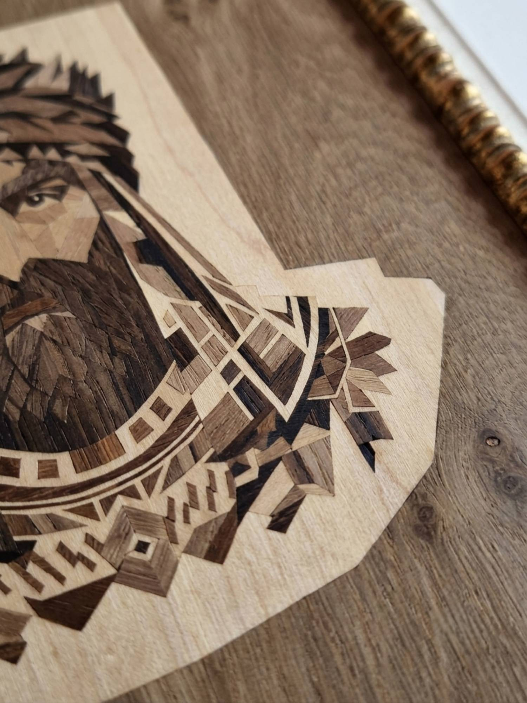

Der fünfte Hochzeitstag ist hölzern. Machen Sie ein Porträt daraus.
Fünf Jahre Ehe werden traditionell mit Holz gefeiert: einem Material, das mit der Zeit an Stärke gewinnt. Ein Porträt von Ihnen beiden, von Hand aus natürlichen Furnieren geschnitten, ist die persönlichste Art, diesen Tag zu würdigen.
Warum Holz nach fünf Jahren?
In der traditionellen Liste der Hochzeitstage gehört das fünfte Jahr dem Holz. Die Bedeutung liegt auf der Hand: Nach fünf Jahren hat eine Ehe Wurzeln geschlagen. Sie hat einige Jahreszeiten überstanden und wächst weiter, langsam und beständig, Jahresring um Jahresring.
Die meisten hölzernen Geschenke zum Hochzeitstag sind Gegenstände: eine Schatulle, ein Brett, ein graviertes Andenken. Ein Intarsienporträt ist etwas anderes. Es ist ein Kunstwerk aus Holz selbst, in dem Ihr Hochzeitsfoto, ein Lieblingsbild von Ihnen beiden oder das Zuhause, das Sie gemeinsam geschaffen haben, aus Hunderten handgeschnittener Teile natürlichen Furniers neu entsteht.
Es gibt auch eine leisere Symbolik. Eine Intarsie hält zusammen, weil jedes Teil exakt so geschnitten ist, dass es zu den Teilen um es herum passt. Eine treffende Beschreibung von fünf gemeinsamen Jahren.
Warum ein Intarsienporträt
Wirklich Holz
Keine Gravur auf einem Brett: Jeder Ton im Porträt ist ein anderes natürliches Holz, von Hand geschnitten und eingepasst.
Ganz und gar Ihres
Nach Ihrer eigenen Fotografie komponiert — niemand sonst wird je dasselbe Werk besitzen.
Geschaffen, um vererbt zu werden
Vollendet, gerahmt und begleitet von einem signierten, nummerierten Echtheitszertifikat.
Vorab gesehen
Eine private Vorschau innerhalb von 24 Stunden, damit Sie genau wissen, was Sie schenken, bevor geschnitten wird.
Was dargestellt werden kann
- Ihr Hochzeitsfoto. Die naheliegende Wahl — und oft die bewegendste.
- Sie beide heute. Ein liebes aktuelles Bild zeigt, wer Sie in fünf Jahren geworden sind.
- Ihr gemeinsames Zuhause, oder der Ort, an dem Sie sich kennengelernt, geheiratet oder Ihre Flitterwochen verbracht haben.
- Die ganze Familie, mit den Kindern oder dem Hund, der den Haushalt komplett macht.
- Ein eigenes Symbol, wie die Rose oder das Herz: ein einzelnes Motiv in edlen Hölzern.

Wann bestellen
Ein Intarsienporträt lässt sich nicht überstürzen. Rechnen Sie mit drei bis sechs Wochen für das Schneiden, zuzüglich Lieferung: Fragen Sie idealerweise etwa zwei Monate vor dem Hochzeitstag an. Das Porträtformular hat ein Feld „Gewünscht bis“ — nennen Sie uns das Datum, und wir sagen Ihnen ehrlich, ob es eingehalten werden kann.
Wenig Zeit? Schon die Vorschau ist ein schönes Geschenk: Überreichen Sie sie am Tag selbst, das vollendete Porträt folgt.
Drei Formate für Ihren Auftrag
Jedes Porträt wird persönlich angeboten, entsprechend seinem Format und der Zahl der von Hand geschnittenen Teile, die es erfordert.
Kabinett
Ca. 300–400 handgeschnittene Teile
Ein einzelnes Motiv in kleinerem Format: ein durchdachtes Geschenk oder ein persönliches Erinnerungsstück.
Ein persönliches Erinnerungsstück
Signature
Ca. 500–700 handgeschnittene Teile
Unser meistgewähltes Format: großzügiges Detail, wie geschaffen für eine Blickfangwand.
Ein Werk als Mittelpunkt
Meisterwerk
Über 800 handgeschnittene Teile
Kompositionen mit mehreren Motiven oder Porträts von außergewöhnlichem Format und Detailreichtum.
Von außergewöhnlichem Format
Von der Fotografie zum Geschenk
Senden Sie Ihre Fotografie
Senden Sie ein bis fünf Fotos über das Porträtformular. Nennen Sie uns den Anlass und, falls vorhanden, das Datum, bis zu dem Sie das Werk benötigen.
Erhalten Sie Ihre private Vorschau
Innerhalb von 24 Stunden senden wir Ihnen eine komponierte Vorschau, wie Ihr Porträt in Holz entstehen wird, zusammen mit Ihrem Angebot. Kostenlos und unverbindlich.
Freigeben oder verfeinern
Eine Überarbeitungsrunde ist inbegriffen. Nichts wird geschnitten, bevor Sie mit der Komposition wirklich zufrieden sind.
Sichern Sie Ihren Auftrag
Eine Anzahlung von 50 % reserviert Ihren Platz im Atelierkalender. Der Restbetrag ist vor dem Versand fällig.
Von Hand geschnitten, Teil für Teil
In der Regel drei bis sechs Wochen konzentrierter Arbeit, mit Foto- und Video-Updates an wichtigen Etappen.
Geliefert, signiert und zertifiziert
In einer Kiste verpackt, nachverfolgbar und versichert an jeden Ort der Welt, mit einem signierten, nummerierten Echtheitszertifikat.
Häufige Fragen
Holz. In der traditionellen Liste der Hochzeitstage ist das fünfte Jahr die Hölzerne Hochzeit, ein Sinnbild für eine Ehe, die Wurzeln geschlagen hat und weiter wächst.
Idealerweise etwa zwei Monate vor dem Datum. Jedes Porträt benötigt drei bis sechs Wochen Handarbeit, zuzüglich Versand. Nennen Sie uns Ihr Datum im Formular, und wir bestätigen, ob es eingehalten werden kann.
Ja. Hochzeitsfotos eignen sich in der Regel sehr gut. Paare werden als Porträt mit zwei Motiven komponiert, und wir empfehlen Ihnen in Ihrer Vorschau das passende Format.
Ja. Jedes Werk wird im Atelier vollendet und gerahmt, dann in einer Kiste verpackt und vollständig nachverfolgbar und versichert versandt.
Ganz und gar nicht. Jeder Hochzeitstag, jede Hochzeit oder Verlobung lässt sich mit einem Porträt feiern. Das Holz macht das fünfte Jahr nur zum perfekten Anlass.
Weiterlesen
Was ist Intarsie? Eine kurze Einführung in Bilder aus Holz
Woher das Handwerk kommt, wie es sich von Einlegearbeit und Parkett unterscheidet und wie ein Porträt aus Furnier entsteht.
Intarsien richtig pflegen
Licht, Luftfeuchtigkeit, Reinigung und Hängung: die wenigen einfachen Gewohnheiten, die ein Werk aus Holz über Generationen schön erhalten.

Handgeschnittene Intarsie oder Holzkunst aus dem Laser? So erkennen Sie den Unterschied
Verkohlte Kanten, gedruckte Maserung, eine einzige Platte: worauf Sie achten sollten und welche Fragen Sie vor einem Auftrag stellen sollten.
Schenken Sie etwas, das in Schönheit altert
Senden Sie uns Ihre Fotografie und das Datum, und erhalten Sie innerhalb von 24 Stunden eine private Vorschau Ihres Porträts zum Hochzeitstag.
Ihr Porträt zum Hochzeitstag beginnen